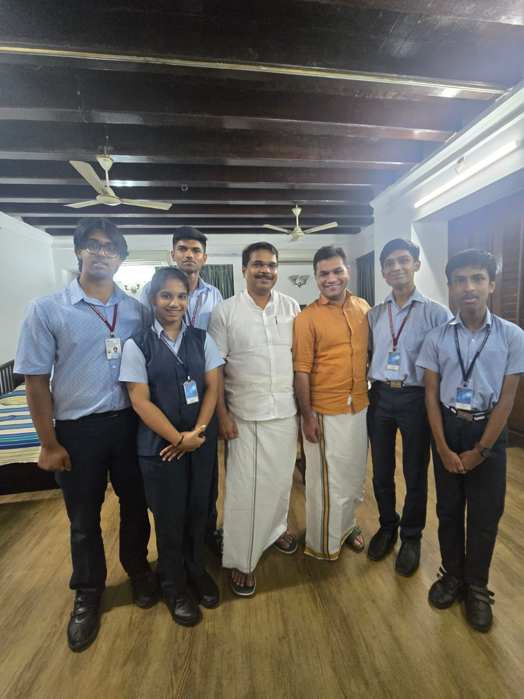

Recognising the awareness gap
The starting point: why devices are stored, discarded or handled without enough information.
CAMPAIGN
NOVARA's evolving journey from asking questions to starting conversations.
OUR JOURNEY · DATES AWAITING REVIEW
The starting point: why devices are stored, discarded or handled without enough information.
Team-supplied notes describe surveying 3,000+ students; methodology remains required for public verification.
Campaigns, workshops and community engagement are presented here as team-supplied activity records.
Development of a proposed smart kiosk concept—not a deployed service.
Planned 1M1B Impact Summit participation on 20 November 2026, subject to confirmation.
CAMPAIGN GALLERY
Photographs and captions supplied by the team. Event dates and locations can be updated as project records are reviewed.
Explore Our Work →


